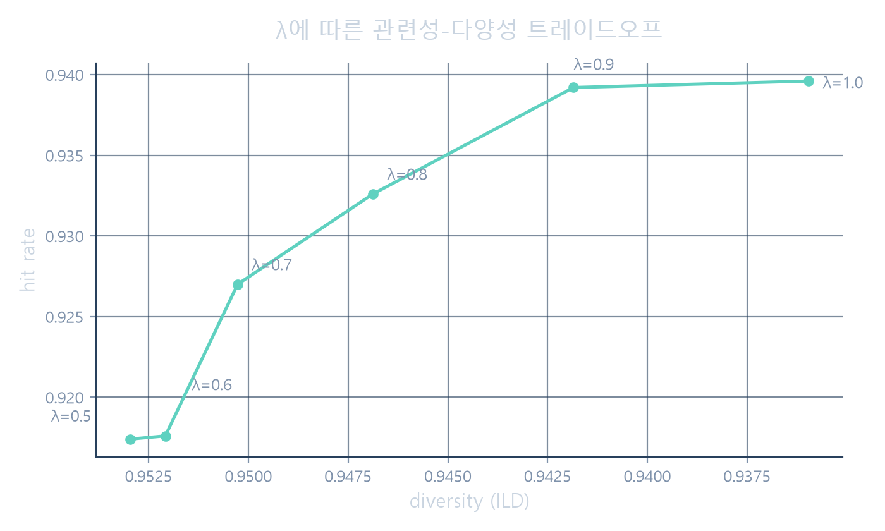

0.704
인기도 베이스라인 AUC
단순 ad_id별 과거 CTR
0.580
카테고리 베이스라인 AUC
카테고리로 뭉치면 신호 손실
0.711
세션 어텐션 모델 AUC
같은 세션 후보를 함께 인코딩
관련성과 다양성은 맞바꿔야 한다
MMR의 λ(람다)는 재랭킹이 관련성에 얼마나 치우칠지를 정한다. 1에 가까울수록 클릭 확률이 높은 후보를 그대로 노출하고, 0.5에 가까울수록 서로 다른 카테고리·토픽을 섞어 노출한다.
λ = 1.0에서 hit rate 0.940, 다양성 0.936. λ = 0.5에서는 hit rate 0.917, 다양성 0.953. 2.3%p의 정확도를 내주는 대가로 다양성이 눈에 띄게 늘어난다.

재랭킹이 실제로 무엇을 했는지, 모델에게 물었다
MMR이 세션마다 어떤 판단을 내렸는지 하나하나 읽는 대신, 재랭킹 전후 다양성 점수 변화를 LLM에 전달해 두 문장 요약을 받았다.
세 번 방향을 틀었다
-
MIND → Outbrain
뉴스 추천용 MIND 데이터셋이 접근 승인제로 바뀌어 다운로드가 막혔다. 광고 클릭 예측 데이터셋인 Outbrain으로 방향을 바꿨다.
-
엔티티 이름 기반 콜드스타트 → 재랭킹 설명 생성
Outbrain의 entity_id가 익명화된 해시라 실제 이름을 알 수 없다는 걸 뒤늦게 확인했다. LLM 활용처를 콘텐츠 이해에서 재랭킹 결과 설명으로 옮겼다.
-
유저 히스토리 GRU → 세션 어텐션
유저의 86%가 재방문 이력이 없어 개인화 시퀀스 모델이 성립하지 않는다는 걸 발견했다. 같은 세션 내 후보 관계를 보는 구조로 바꿨다.